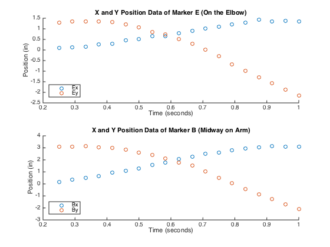
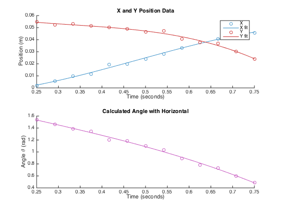
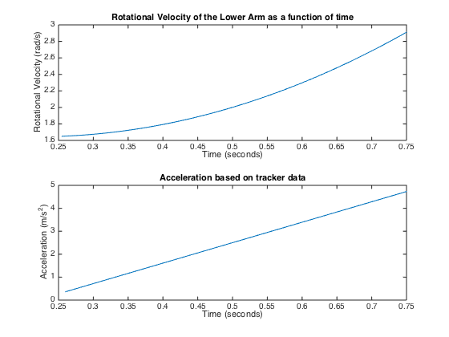
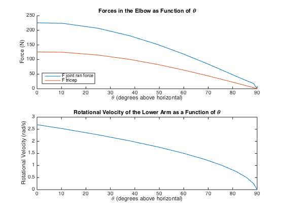

Contents
% BIOE404 Project % Kyle King, Shiri Brodsky, Kristina Dziki % 11-17-2014 clc, clear all, close all % Boilerplate
Import data
Name = 'ShiriData.xlsx'; currentFolder = pwd; filename = strcat(currentFolder, '/', Name); Shiri_Data = xlsread (filename); % Takes data from excel sheet % Parse data start_analysis = 7; times = Shiri_Data(start_analysis:end, 1); data(:,1) = Shiri_Data(start_analysis:end, 4); data(:,2) = Shiri_Data(start_analysis:end, 5); data(:,3) = Shiri_Data(start_analysis:end, 6); data(:,4) = Shiri_Data(start_analysis:end, 7);
Plot Captured Data
figure subplot(2, 1, 1), hold all, plot(times, data(:,1), 'o'), plot(times, data(:,2), 'o') legend('Ex', 'Ey', 'Location', 'SouthWest'), title('X and Y Position Data of Marker E (On the Elbow)') xlabel('Time (seconds)'), ylabel('Position (in)') subplot(2, 1, 2), hold all, plot(times, data(:,3), 'o'), plot(times, data(:,4), 'o') legend('Bx', 'By', 'Location', 'SouthWest'), title('X and Y Position Data of Marker B (Midway on Arm)') xlabel('Time (seconds)'), ylabel('Position (in)') % Remove excess data points when Shiri's arm is de-accelerating % end_analysis = length(times)-5; end_analysis = length(times)-0; t = Shiri_Data(start_analysis:end_analysis, 1); Ex = Shiri_Data(start_analysis:end_analysis, 4).*0.03; Ey = Shiri_Data(start_analysis:end_analysis, 5).*0.03; Bx = Shiri_Data(start_analysis:end_analysis, 6).*0.03; By = Shiri_Data(start_analysis:end_analysis, 7).*0.03; % Find vector components of radius_BC (EB from tracker) x = Bx - Ex; y = By - Ey; thetas = atan(y./x); % Find angle of lower arm from horizontal t1 = linspace(t(1), t(end)); % higher resolution time points for fit % Fit theta position data to a smooth curve ptheta = polyfit(t, thetas, 3); thetas1 = polyval(ptheta, t1); % fit % Fit x position data to a smooth curve px = polyfit(t, x, 3); x1 = polyval(px, t1); % fit % Fit y position data to a smooth curve py = polyfit(t, y, 3); y1 = polyval(py, t1); % fit % Colors: base = 256; % rgb is based on 256, but Matlab wants it on a 0 to 1 scale blue = [69/base, 151/base, 204/base]; red = [255/base, 112/base, 112/base]; purple = [199/base, 87/base, 193/base]; % yellow = [255/base, 254/base, 169/base]; % too bright red = [205/base, 51/base, 51/base]; % Plot to see what position data is calculated figure, subplot(2, 1, 1), hold all plot(t, x, 'o', 'Color', blue), plot(t1, x1, 'Color', blue) plot(t, y, 'o', 'Color', red), plot(t1, y1, 'Color', red) legend('X','X fit', 'Y', 'Y fit') title('X and Y Position Data') xlabel('Time (seconds)'), ylabel('Position (m)') subplot(2, 1, 2), hold all plot(t, thetas, 'o', 'Color', purple), plot(t1, thetas1, 'Color', purple) title('Calculated Angle with Horizontal') xlabel('Time (seconds)'), ylabel('Angle \theta (rad)') % % 3D plot, because why not % figure, plot3(t(7:end), x, y), axis tight % title('X and Y Position Data and Calculated Angle with Horizontal') % xlabel('Time (seconds)'), ylabel('Position (m)') 
Find the angular velocity and acceleration
Initialize variables
sum_acc = 0; vel(1) = 1.6503; dt1 = t1(2) - t1(1); % Find change in time for i = 2:length(t1) % Find the change in angle (position) dthetas1(i) = thetas1(i-1) - thetas1(i); % Find the angular velocity vel(i) = dthetas1(i)/dt1; % Find the angular acceleration acc(i) = (vel(i) - vel(i-1))/dt1; % take summation of both values for average later if i >= 3 sum_acc = sum_acc + acc(i); end end % Take Averages avg_acc = sum_acc/(i-1); % rad/s^2 % Plot speed and acceleration figure, subplot(2, 1, 1), plot(t1(2:end), vel(2:end)) title('Rotational Velocity of the Lower Arm as a function of time') xlabel('Time (seconds)'), ylabel('Rotational Velocity (rad/s)') subplot(2, 1, 2), plot(t1(3:end), acc(3:end)) title('Acceleration based on tracker data') xlabel('Time (seconds)'), ylabel('Acceleration (m/s^2)')
Initialize initial conditions
Arm info
length_arm = 0.22; % in m COM_arm = (1/2)*length_arm; % in m mass_EH = (0.0207*120*4.448)/9.8; % in kg based on percent of body weight % Racket based on average racket size and weight mass_racket = 0.275; % kilograms length_racket = 0.69; % meters COM_racket = (2/3)*length_racket; % Estimate % Total mass of arm with racket mass_net = mass_EH + mass_racket; Fw = [0, -mass_net*9.81, 0]; % N % Net COM for racket and arm com_net = ( COM_arm*mass_EH + (length_arm+COM_racket)*mass_racket ) / mass_net; I = (1/12)*(mass_net)*(com_net)^2; % in kg*m^2 % Location of tricep muscle r_tricep = [-0.025, -0.03, 0]; % end of tricep muscle l_tricep = [-2/100, 14/100, 0]; % m u_tricep = (l_tricep - r_tricep)./norm(l_tricep - r_tricep); % unit less % For Loop variables t_step = 0.1; count = 1; angle_theta(1) = 90; % Start at vertical (90') speed_vel(1) = 0; % with omega = 0
Test impact of end angle in swing on internal elbow forces
for t = 1:t_step:2.8 count = count+1; % Counter variable time(count) = t; % store time value (s) % Calculate the current velocity and angle of theta based on average acceleration vel_step = t_step*avg_acc; speed_vel(count) = speed_vel(count-1) + vel_step; theta_step(count) = speed_vel(count) * t_step * (180/pi); angle_theta(count) = angle_theta(count-1) - theta_step(count); % Calculate new Center of Mass com_loc = [cosd(angle_theta(count)), sind(angle_theta(count)), 0].*com_net; % Calculate components of acceleration atang(count, :) = cross(-com_loc, [0, 0, avg_acc]); anorm(count, :) = -com_loc.*norm([0, 0, speed_vel(count)].^2); atotal(count, :) = atang(count, :) + anorm(count, :); % Solve for the force of the tricep muscle M_net = [0, 0, I*avg_acc]; M_arm_racket_w = cross(com_loc, Fw); F_tricep(count, :) = (M_net-M_arm_racket_w)/cross(r_tricep, u_tricep); % Solve for inter segmental force at the elbow F_jrf(count, :) = (mass_net*atotal(count, :)) - Fw - F_tricep(count, :); %N % Store data in arrays for graphing force_elbow_reactions(count) = norm(F_jrf(count, :)); F_tricep_graph(count) = norm(F_tricep(count, :)); anorm_graph(count) = norm(anorm(count, :)); atang_graph(count) = norm(atang(count, :)); end
Plot results
figure subplot(2,1,1), hold all plot(angle_theta, force_elbow_reactions), plot(angle_theta, F_tricep_graph) legend('F_j_r_f', 'F_t_r_i') xlim([0 90]) title('Forces in the Elbow as Function of \theta') xlabel('\theta (degrees above horizontal)'), ylabel('Force (N)') subplot(2,1,2), plot(angle_theta, speed_vel) xlim([0 90]) title('Rotational Velocity of the Lower Arm as a Function of \theta') xlabel('\theta (degrees above horizontal)'), ylabel('Rotational Velocity (rad/s)')